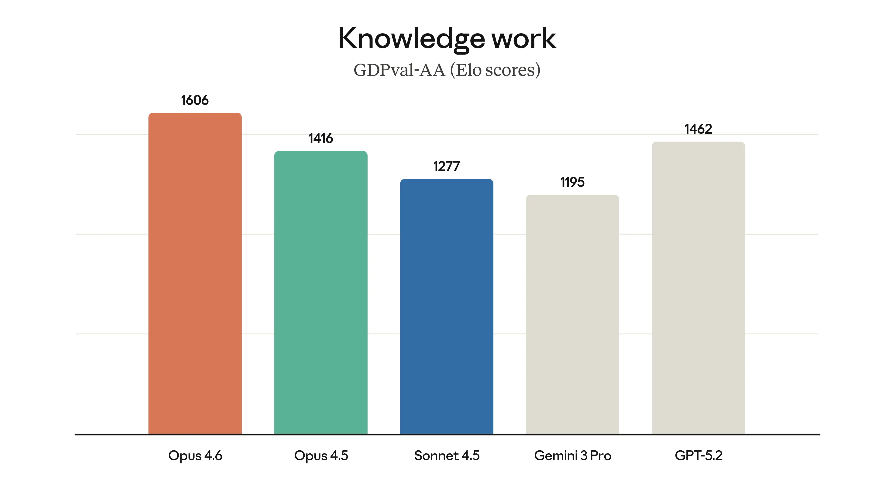
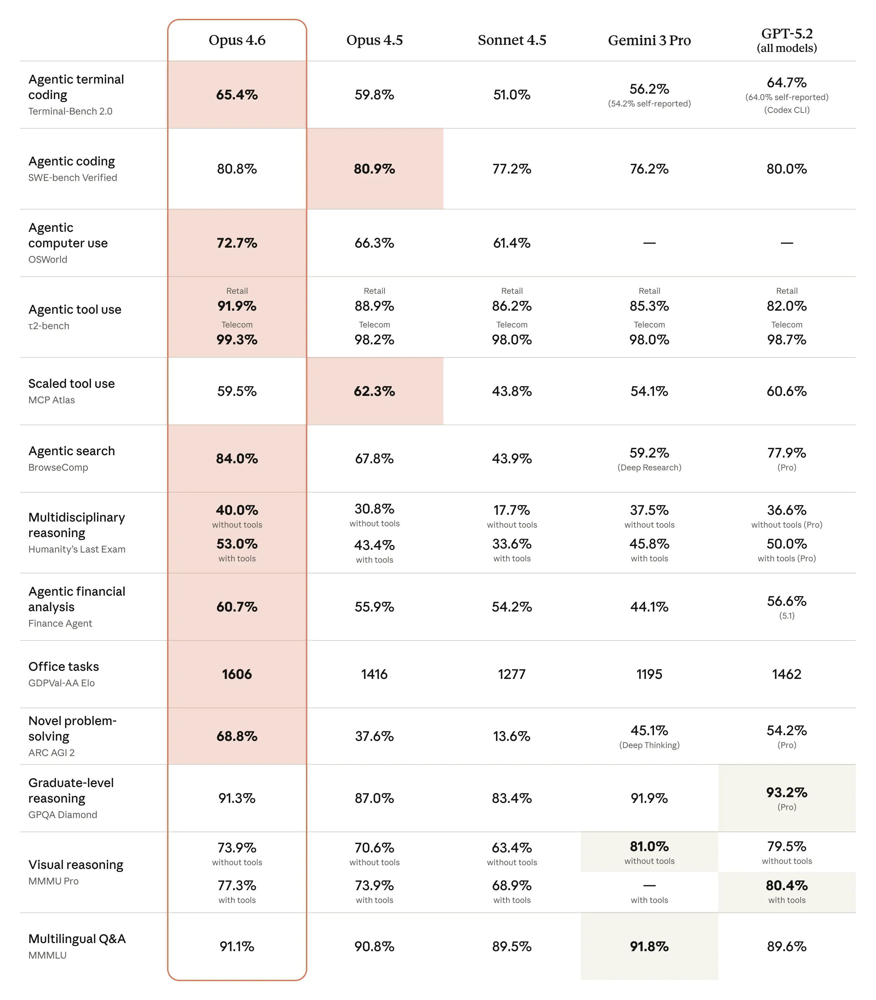
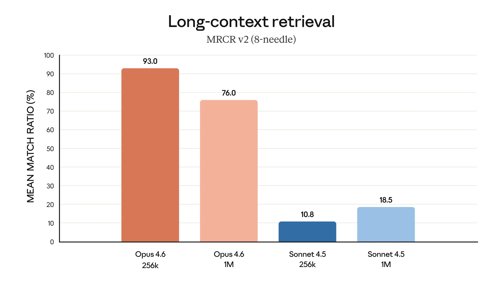
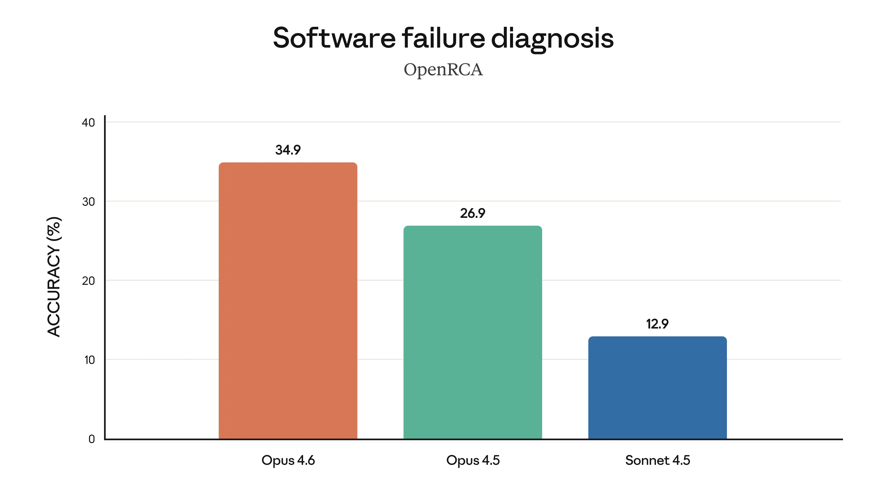
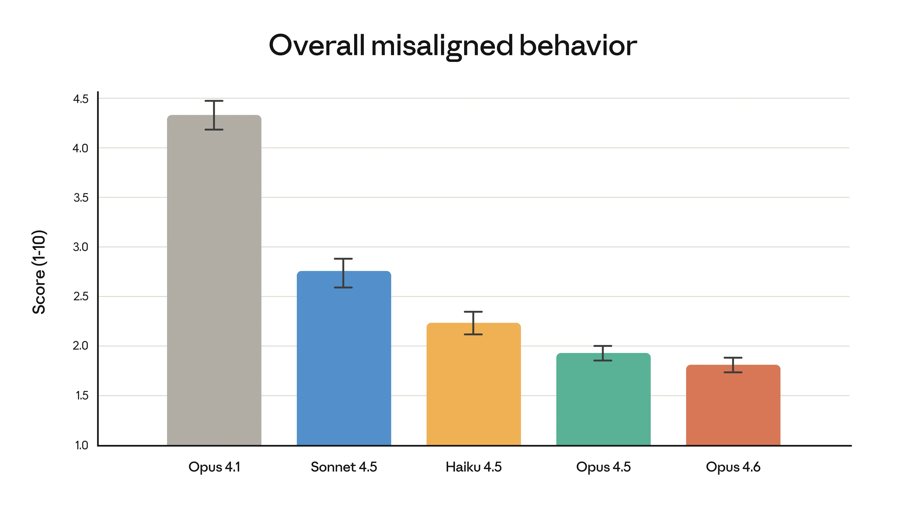

Introducing Claude Opus 4.6
We’re upgrading our smartest model.
The new Claude Opus 4.6 improves on its predecessor’s coding skills. It plans more carefully, sustains agentic tasks for longer, can operate more reliably in larger codebases, and has better code review and debugging skills to catch its own mistakes. And, in a first for our Opus-class models, Opus 4.6 features a 1M token context window in beta1.
Opus 4.6 can also apply its improved abilities to a range of everyday work tasks: running financial analyses, doing research, and using and creating documents, spreadsheets, and presentations. Within Cowork, where Claude can multitask autonomously, Opus 4.6 can put all these skills to work on your behalf.
The model’s performance is state-of-the-art on several evaluations. For example, it achieves the highest score on the agentic coding evaluation Terminal-Bench 2.0 and leads all other frontier models on Humanity’s Last Exam, a complex multidisciplinary reasoning test. On GDPval-AA—an evaluation of performance on economically valuable knowledge work tasks in finance, legal, and other domains2—Opus 4.6 outperforms the industry’s next-best model (OpenAI’s GPT-5.2) by around 144 Elo points,3 and its own predecessor (Claude Opus 4.5) by 190 points. Opus 4.6 also performs better than any other model on BrowseComp, which measures a model’s ability to locate hard-to-find information online.
As we show in our extensive system card, Opus 4.6 also shows an overall safety profile as good as, or better than, any other frontier model in the industry, with low rates of misaligned behavior across safety evaluations.

In Claude Code, you can now assemble agent teams to work on tasks together. On the API, Claude can use compaction to summarize its own context and perform longer-running tasks without bumping up against limits. We’re also introducing adaptive thinking, where the model can pick up on contextual clues about how much to use its extended thinking, and new effort controls to give developers more control over intelligence, speed, and cost.
We’ve made substantial upgrades to Claude in Excel, and we’re releasing Claude in PowerPoint in a research preview. This makes Claude much more capable for everyday work.
Claude Opus 4.6 is available today on claude.ai, our API, and all major cloud platforms. If you’re a developer, use claude-opus-4-6 via the Claude API. Pricing remains the same at $5/$25 per million tokens; for full details, see our pricing page.
We cover the model, our new product updates, our evaluations, and our extensive safety testing in depth below.
First impressions
We build Claude with Claude. Our engineers write code with Claude Code every day, and every new model first gets tested on our own work. With Opus 4.6, we’ve found that the model brings more focus to the most challenging parts of a task without being told to, moves quickly through the more straightforward parts, handles ambiguous problems with better judgment, and stays productive over longer sessions.
Opus 4.6 often thinks more deeply and more carefully revisits its reasoning before settling on an answer. This produces better results on harder problems, but can add cost and latency on simpler ones. If you’re finding that the model is overthinking on a given task, we recommend dialing effort down from its default setting (high) to medium. You can control this easily with the /effort parameter.
Here are some of the things our Early Access partners told us about Claude Opus 4.6, including its propensity to work autonomously without hand-holding, its success where previous models failed, and its effect on how teams work:
Claude Opus 4.6 is the strongest model Anthropic has shipped. It takes complicated requests and actually follows through, breaking them into concrete steps, executing, and producing polished work even when the task is ambitious. For Notion users, it feels less like a tool and more like a capable collaborator.
Early testing shows Claude Opus 4.6 delivering on the complex, multi-step coding work developers face every day—especially agentic workflows that demand planning and tool calling. This starts unlocking long-horizon tasks at the frontier.
Claude Opus 4.6 is a huge leap for agentic planning. It breaks complex tasks into independent subtasks, runs tools and subagents in parallel, and identifies blockers with real precision.
Claude Opus 4.6 is the best model we've tested yet. Its reasoning and planning capabilities have been exceptional at powering our AI Teammates. It's also a fantastic coding model – its ability to navigate a large codebase and identify the right changes to make is state of the art.
Claude Opus 4.6 reasons through complex problems at a level we haven't seen before. It considers edge cases that other models miss and consistently lands on more elegant, well-considered solutions. We're particularly impressed with Opus 4.6 in Devin Review, where it's increased our bug catching rates.
Claude Opus 4.6 feels noticeably better than Opus 4.5 in Windsurf, especially on tasks that require careful exploration like debugging and understanding unfamiliar codebases. We’ve noticed Opus 4.6 thinks longer, which pays off when deeper reasoning is needed.
Claude Opus 4.6 represents a meaningful leap in long-context performance. In our testing, we saw it handle much larger bodies of information with a level of consistency that strengthens how we design and deploy complex research workflows. Progress in this area gives us more powerful building blocks to deliver truly expert-grade systems professionals can trust.
Across 40 cybersecurity investigations, Claude Opus 4.6 produced the best results 38 of 40 times in a blind ranking against Claude 4.5 models. Each model ran end to end on the same agentic harness with up to 9 subagents and 100+ tool calls.
Claude Opus 4.6 is the new frontier on long-running tasks from our internal benchmarks and testing. It's also been highly effective at reviewing code.
Claude Opus 4.6 achieved the highest BigLaw Bench score of any Claude model at 90.2%. With 40% perfect scores and 84% above 0.8, it’s remarkably capable for legal reasoning.
Claude Opus 4.6 autonomously closed 13 issues and assigned 12 issues to the right team members in a single day, managing a ~50-person organization across 6 repositories. It handled both product and organizational decisions while synthesizing context across multiple domains, and it knew when to escalate to a human.
Claude Opus 4.6 is an uplift in design quality. It works beautifully with our design systems and it’s more autonomous, which is core to Lovable’s values. People should be creating things that matter, not micromanaging AI.
Claude Opus 4.6 excels in high-reasoning tasks like multi-source analysis across legal, financial, and technical content. Box’s eval showed a 10% lift in performance, reaching 68% vs. a 58% baseline, and near-perfect scores in technical domains.
Claude Opus 4.6 generates complex, interactive apps and prototypes in Figma Make with an impressive creative range. The model translates detailed designs and multi-layered tasks into code on the first try, making it a powerful starting point for teams to explore and build ideas.
Claude Opus 4.6 is the best Anthropic model we’ve tested. It understands intent with minimal prompting and went above and beyond, exploring and creating details I didn’t even know I wanted until I saw them. It felt like I was working with the model, not waiting on it.
Both hands-on testing and evals show Claude Opus 4.6 is a meaningful improvement for design systems and large codebases, use cases that drive enormous enterprise value. It also one-shotted a fully functional physics engine, handling a large multi-scope task in a single pass.
Claude Opus 4.6 is the biggest leap I’ve seen in months. I’m more comfortable giving it a sequence of tasks across the stack and letting it run. It’s smart enough to use subagents for the individual pieces.
Claude Opus 4.6 handled a multi-million-line codebase migration like a senior engineer. It planned up front, adapted its strategy as it learned, and finished in half the time.
We only ship models in v0 when developers will genuinely feel the difference. Claude Opus 4.6 passed that bar with ease. Its frontier-level reasoning, especially with edge cases, helps v0 to deliver on our number-one aim: to let anyone elevate their ideas from prototype to production.
The performance jump with Claude Opus 4.6 feels almost unbelievable. Real-world tasks that were challenging for Opus [4.5] suddenly became easy. This feels like a watershed moment for spreadsheet agents on Shortcut.
Evaluating Claude Opus 4.6
Across agentic coding, computer use, tool use, search, and finance, Opus 4.6 is an industry-leading model, often by a wide margin. The table below shows how Claude Opus 4.6 compares to our previous models and to other industry models on a variety of benchmarks.

Opus 4.6 is much better at retrieving relevant information from large sets of documents. This extends to long-context tasks, where it holds and tracks information over hundreds of thousands of tokens with less drift, and picks up buried details that even Opus 4.5 would miss.
A common complaint about AI models is “context rot,” where performance degrades as conversations exceed a certain number of tokens. Opus 4.6 performs markedly better than its predecessors: on the 8-needle 1M variant of MRCR v2—a needle-in-a-haystack benchmark that tests a model’s ability to retrieve information “hidden” in vast amounts of text—Opus 4.6 scores 76%, whereas Sonnet 4.5 scores just 18.5%. This is a qualitative shift in how much context a model can actually use while maintaining peak performance.
All in all, Opus 4.6 is better at finding information across long contexts, better at reasoning after absorbing that information, and has substantially better expert-level reasoning abilities in general.

Finally, the charts below show how Claude Opus 4.6 performs on a variety of benchmarks that assess its software engineering skills, multilingual coding ability, long-term coherence, cybersecurity capabilities, and its life sciences knowledge.

A step forward on safety
These intelligence gains do not come at the cost of safety. On our automated behavioral audit, Opus 4.6 showed a low rate of misaligned behaviors such as deception, sycophancy, encouragement of user delusions, and cooperation with misuse. Overall, it is just as well-aligned as its predecessor, Claude Opus 4.5, which was our most-aligned frontier model to date. Opus 4.6 also shows the lowest rate of over-refusals—where the model fails to answer benign queries—of any recent Claude model.

For Claude Opus 4.6, we ran the most comprehensive set of safety evaluations of any model, applying many different tests for the first time and upgrading several that we’ve used before. We included new evaluations for user wellbeing, more complex tests of the model’s ability to refuse potentially dangerous requests, and updated evaluations of the model’s ability to surreptitiously perform harmful actions. We also experimented with new methods from interpretability, the science of the inner workings of AI models, to begin to understand why the model behaves in certain ways—and, ultimately, to catch problems that standard testing might miss.
A detailed description of all capability and safety evaluations is available in the Claude Opus 4.6 system card.
We’ve also applied new safeguards in areas where Opus 4.6 shows particular strengths that might be put to dangerous as well as beneficial uses. In particular, since the model shows enhanced cybersecurity abilities, we’ve developed six new cybersecurity probes—methods of detecting harmful responses—to help us track different forms of potential misuse.
We’re also accelerating the cyberdefensive uses of the model, using it to help find and patch vulnerabilities in open-source software (as we describe in our new cybersecurity blog post). We think it’s critical that cyberdefenders use AI models like Claude to help level the playing field. Cybersecurity moves fast, and we’ll be adjusting and updating our safeguards as we learn more about potential threats; in the near future, we may institute real-time intervention to block abuse.
Product and API updates
We’ve made substantial updates across Claude, Claude Code, and the Claude Platform to let Opus 4.6 perform at its best.
Claude Platform
On the API, we’re giving developers better control over model effort and more flexibility for long-running agents. To do so, we’re introducing the following features:
- Adaptive thinking. Previously, developers only had a binary choice between enabling or disabling extended thinking. Now, with adaptive thinking, Claude can decide when deeper reasoning would be helpful. At the default effort level (high), the model uses extended thinking when useful, but developers can adjust the effort level to make it more or less selective.
- Effort. There are now four effort levels to choose from: low, medium, high (default), and max. We encourage developers to experiment with different options to find what works best.
- Context compaction (beta). Long-running conversations and agentic tasks often hit the context window. Context compaction automatically summarizes and replaces older context when the conversation approaches a configurable threshold, letting Claude perform longer tasks without hitting limits.
- 1M token context (beta). Opus 4.6 is our first Opus-class model with 1M token context. Premium pricing applies for prompts exceeding 200k tokens ($10/$37.50 per million input/output tokens), available only on the Claude Platform.
- 128k output tokens. Opus 4.6 supports outputs of up to 128k tokens, which lets Claude complete larger-output tasks without breaking them into multiple requests.
- US-only inference. For workloads that need to run in the United States, US-only inference is available at 1.1× token pricing.
Product updates
Across Claude and Claude Code, we’ve added features that allow knowledge workers and developers to tackle harder tasks with more of the tools they use every day.
We’ve introduced agent teams in Claude Code as a research preview. You can now spin up multiple agents that work in parallel as a team and coordinate autonomously—best for tasks that split into independent, read-heavy work like codebase reviews. You can take over any subagent directly using Shift+Up/Down or tmux.
Claude now also works better with the office tools you already use. Claude in Excel handles long-running and harder tasks with improved performance, and can plan before acting, ingest unstructured data and infer the right structure without guidance, and handle multi-step changes in one pass. Pair that with Claude in PowerPoint, and you can first process and structure your data in Excel, then bring it to life visually in PowerPoint. Claude reads your layouts, fonts, and slide masters to stay on brand, whether you’re building from a template or generating a full deck from a description. Claude in PowerPoint is now available in research preview for Max, Team, and Enterprise plans.
Footnotes
[1] The 1M token context window is currently available in beta on the Claude Developer Platform only.
[2] Run independently by Artificial Analysis. See here for full methodological details.
[3] This translates into Claude Opus 4.6 obtaining a higher score than GPT-5.2 on this eval approximately 70% of the time (where 50% of the time would have implied parity in the scores).
- For GPT-5.2 and Gemini 3 Pro models, we compared the best reported model version in the charts and table.
- Terminal-Bench 2.0: We report both scores reproduced on our infrastructure and published scores from other labs. All runs used the Terminus-2 harness, except for OpenAI’s Codex CLI. All experiments used 1× guaranteed / 3× ceiling resource allocation and 5–15 samples per task across staggered batches. See system card for details.
- Humanity’s Last Exam: Claude models run “with tools” were run with web search, web fetch, code execution, programmatic tool calling, context compaction triggered at 50k tokens up to 3M total tokens, max reasoning effort, and adaptive thinking enabled. A domain blocklist was used to decontaminate eval results. See system card for more details.
- SWE-bench Verified: Our score was averaged over 25 trials. With a prompt modification, we saw a score of 81.42%.
- MCP Atlas: Claude Opus 4.6 was run with max effort. When run at high effort, it reached an industry-leading score of 62.7%.
- BrowseComp: Claude models were run with web search, web fetch, programmatic tool calling, context compaction triggered at 50k tokens up to 10M total tokens, max reasoning effort, and no thinking enabled. Adding a multi-agent harness increased scores to 86.8%. See system card for more details.
- ARC AGI 2: Claude Opus 4.6 was run with max effort and a 120k thinking budget score.
- CyberGym: Claude models were run on no thinking, default effort, temperature, and
top_p. The model was also given a “think” tool that allowed interleaved thinking for multi-turn evaluations. - OpenRCA: For each failure case in OpenRCA, Claude receives 1 point if all generated root-cause elements match the ground-truth ones, and 0 points if any mismatch is identified. The overall accuracy is the average score across all failure cases. The benchmark was run on the benchmark author’s harness, graded using their official methodology, and has been submitted for official verification.
[Feb 23, 2026] Updated reported score for Opus 4.6 for HLE with tools (53.1% to 53.0%). The update was caused by running an improved cheating detection pipeline which flagged 3 additional instances of cheating that our original pipeline had missed.
Related content
Claude discovers a novel enzyme system with CRISPR-like repeats
We’re announcing a new life sciences research group and laboratory at Anthropic. This post introduces the team behind this work and shares early results in which Claude discovered a novel enzyme system with properties reminiscent of CRISPR, with only high-level direction from our scientists.
Read morePartnering with Accenture on embedded evaluation
Read moreIntroducing the Life Sciences Verification Program
The Life Sciences Verification Program (LSVP) gives life science professionals access to Claude Mythos, Opus, and Sonnet models with a refined set of safeguards more permissive for biology-related work.
Read more